WHAT'S NEW IN
AVENGERLAND
Archive 2009 - 2010
2010
31st December - The last location found this year courtesy of a tree featured in THE AVENGERS: The Positive Negative Man.
THE CHAMPIONS:
The
Beginning
L3:
British
Rail Centre, The Grove, The Grove Park, Grove Mill Lane, Watford
Nemesis agents Sharron Macready
(Alexandra Bastedo),
Craig Sterling (Stuart Damon) and Richard Barratt
(William Gaunt) wait outside a Chinese research laboratory
for a signal from an inside man, Ho Ling aka 'Julius Retford' (Rick
Young). After breaking into the establishment
and collecting samples of deadly bacteria the Nemesis agents are
pursued by Chinese guards (lead by Anthony Chinn). Ho
Ling manages to get a seat in one of the pursing trucks so he can
report back to Geneva.
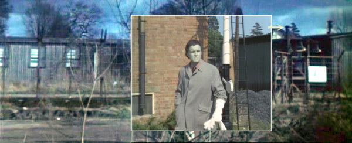
13th December - Well done Greg Mishevski, aka SainT on the Britmovie Forum, who has found the final Mews on the Unknown Mews page.
RETURN
OF THE SAINT:
One Black September
Pindock Mews, Maida
Vale, W9 - Simon
Templar (Ian Ogilvy) chases Masroof
(Stephen Grief) to the road at the back of the Black September hideout.
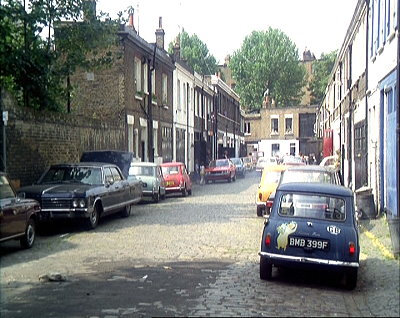
10th December - Another excellent find from Greg Mishevski, aka SainT on the Britmovie Forum. This location has been unsolved for a number of years despite many people trawling through an awful lot of mews.
JOURNEY
TO THE UNKNOWN: Poor Butterfly
Redcliffe Mews, South
Kensington and Harcourt Terrace, SW10 – Commercial artist, Steven Miller (Chad
Everett) has received an invitation to attend
a weekend party in the country and sets off from his mews flat in his
1929 Bugatti
and drives from the mews onto a London road (Redcliffe
Mews on to Harcourt Terrace).
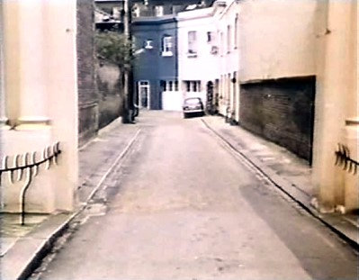

1st December - Congratulations on a fine piece of location detective work from Greg Mishevski, aka SainT on the Britmovie Forum, who does all his location spotting from Macedonia. This location has been high on the list of important unknown DANGER MAN for many years, well done Greg.
DANGER
MAN: The Paper Chase
Bulkeley
House, Middle Hill, Englefield Green, Surrey - Eddie Geld sends John Drake (Patrick McGoohan)
to a safe house run by Madame Nandina.
He is met at the door by Canesi
(Sandor
Ellis). Later Drake follows Laprade
(Ferdy
Mayne)
from the house.

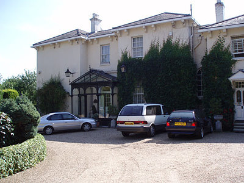
photo from the European College of Hypnotherapy web site
I have to apologiseto Greg for not posting up these Zagreb locations earlier. Although they are included on the Croatia page, Zagreb was part of Yugoslavia when this footage was filmed. Greg took a lot of effort to arrange for these photos to be taken.
MAN
IN A SUITCASE: Somebody
Loses...Somebody Wins
The
corner of Mihanovića
and Jurja Haulika,
looking northwest - Ruth Klinger is taken to the
secret police headquarters in East Berlin to be questioned.
(Identified by Greg Mishevski, aka SainT on the Britmovie
Forum, February 22nd, 2010)
(photo:
Davor
Djurinic,
March 2nd, 2010)

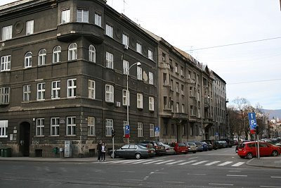
THE
BARON: Enemy of the State
Taken
from the number 16 Ilica
looking west - A British agent is picked up by the
secret police in Eastern Europe.
(Confirmation that this is Zagreb from Greg Mishevski, aka SainT
on the Britmovie Forum,
February 12th, 2010)
(photo:
Davor
Djurinic,
May 11th, 2010)

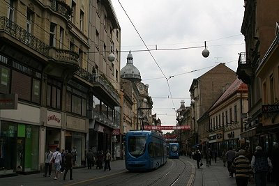
THE
BARON: Enemy of the State
Corner
of Trg kralja
Tomislava
and Trg
Ante Starčevića,
looking north - A British agent is picked up by the
secret police in Eastern Europe
(Confirmation that this is Zagreb from Greg Mishevski, aka SainT
on the Britmovie Forum,
February 12th, 2010)
(photo: Davor Djurinic,
March 2nd, 2010)


THE
BARON: Enemy of the State
The
corner of Trg
Ante Starčevića
and Trg kralja
Tomislava,
looking west - A British agent is picked up by the
secret police in Eastern Europe.
(Confirmation that this is Zagreb from Greg Mishevski, aka SainT
on the Britmovie Forum,
February 12th, 2010)
(photo:
Davor
Djurinic,
March 2nd, 2010)


16th November - Ed Osborne has done a magnificent job in finding The Carnisero from THE CHAMPIONSepisode Get Me Out of Here!. This is the Civic Centre, Dacorum Way, Hemel Hempstead. We have not had a location in central Hemel Hempstead before so eagle eyes and a quick wit were required. Ed has also been kind enough to send in a couple of photos showing that the building has change little since 1967.
THE
CHAMPIONS: Get Me Out of Here!
B21:
Hemel
Hempstead Civic Centre, Dacorum
Way - From a café across the street Sharron and
Craig Sterling watch “The Carnisero”,
where Professor Anna Maria Martes
is being held. That night Craig and Richard break into The
Carnisero
and free Maria Martes.
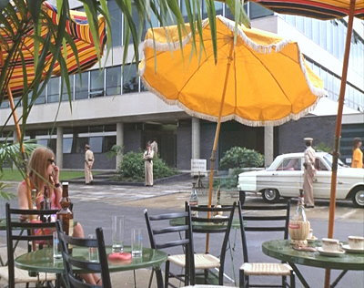


10th November - After looking long and hard Geoff Dodd has managed to find this missing location from THE CHAMPIONS: Nutcracker. This has been a difficult search as locations in Saint Albans' are also used in this sequence.
THE
CHAMPIONS: Nutcracker (Roy Ward Baker: February 1968)
Lower
Merton Rise, NW3 - The fake police car drops spikes
on the road to prevent Craig from following Richard from the tailors'
shop.
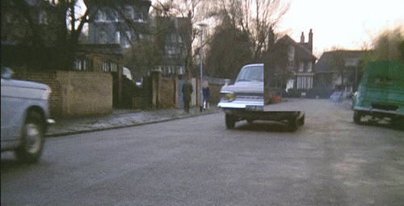
6th November - Chris Mac of the Britmovie Forum was quick off the mark when he identified this location from THE AVENGERS.
THE
AVENGERS: Conspiracy of
Silence
Chiswick
House, Burlington Lane, Chiswick, W4
- Carlo (Robert Rietty)
has followed Steed (Patrick Macnee) to a park (Chiswick House gardens)where
he has taken his dog, Sheba, for a run. Carlo attempts to shoot Steed
with a silenced revolver but misses. Carlo panics and runs away leaving
the pistol and his briefcase behind.


5th November - Mike Richardson has spotted that the 1972 Wings single, Mary Had a Little Lamb, had a promotional film shot at N35: Tykes Water Lake and Aldenham Park.
29th October - Three varied finds by Geoff Dodd:
THE
CHAMPIONS: The Gilded Cage
N54:
Links Drive, Elstree - Craig is driving in his Mercedes as herealises
that Richard is being kidnapped from his flat.
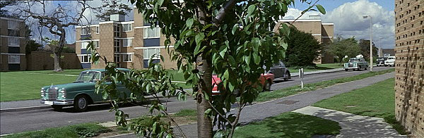
THE
SAINT: Escape Route
Chilworth
Street, W2 - The Saint drives through London in his
Volvo (past The Casserley
Hotel, Chilworth
Street at the junction with Gloucester Terrace). He parks
outside a house and breaks in.

GIDEON’S
WAY: To Catch A Tiger
Oxford
Street, W1 - Commander George Gideon drives his
family to the cinema after a meal in town (footage of C&A
Oxford Street opposite Selfridges, now a Primark).

11th October - Sam Denham has also sent in this:
DANGER MAN:
The View from the Villa
Euston
Road, NW1 - Mayne and
Mrs. Delroy
pull up in a Ford Fairlane
saloon outside a modern office block (Marathon House)
across the road from Gina Scarlotti's
shop in Rome (narrowly missing John Drake as he runs across
the road in Washington D.C.).
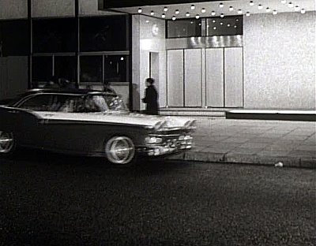
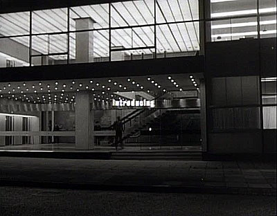
10th October - Sam Denham has spotted a location that had been overlooked in THE PERSUADERS!: Chain Of Events:
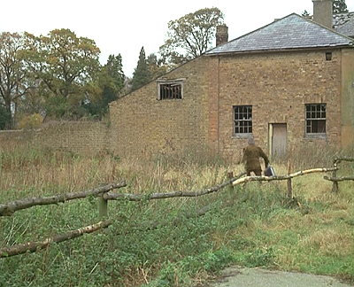
H20: The Coachouse, Sevenhills Road, Iver Heath - Pursued through the woods, Danny (Tony Curtis) takes refuge in a farm building. Just as he gets inside Lance Schubert (Peter Vaughan) arrives. He is there to meet four men (James Beckett, Rocky Taylor, Peter Brace and Larry Taylor) who arrive in a Landrover. Danny watches as Schubert distributes police uniforms to the men so that they can hunt down Danny unmolested
Also found for this episode:
F21: Denham Aerodrome, Denham - Eastern Europe - An small aeroplane arrives and the pilot gets out watched by four Soviet officials by a jeep in the nearby trees. They are all waiting for Baxter (Gerry Crampton) who arrives on a motorbike with a case. The pilot attempts to shoot Baxter as he arrives, but his gun jams. Baxter tries to escape, but he is pursued and gunned down by the men in the Jeep. One of the men, Profokiev (Leon Eagles), gets into the plane with a case identical to that of Baxter and flies off with the pilot.
5th October - Paul Stroud has identified the following:
DEPARTMENT
S: Soup of the Day
Pan leading to Plaza Marques de Pombal,
Lisbon, Portugal - establishing shot as Jason is in Portugal
investigating Señor
Ramos.

Hotel Ritz, Rua Rodrigo da Fonseca, Lisbon, Portugal - Jason's hotel whilst he is investigating Señor Ramos.

Rossio Square Lisbon, Portuga - Establishing shot of Lisbon at night as Jason breaks into Ramos & Ca. Lda..
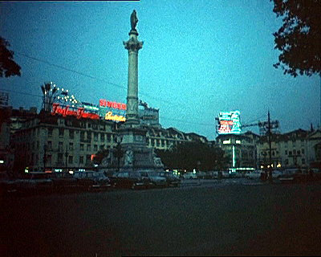
DEPARTMENT
S: The Double Death of
Charlie Crippen
Piazza Nicola Amore, Naples - Jason visits car showroom.
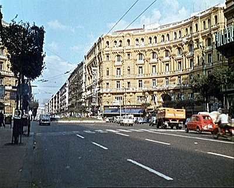
RANDALL
AND HOPKIRK [DECEASED]: Somebody Just
Walked Over My Grave
Neuhauser
Strasse,
Munich, Germany - Marty transports himself to Munich to watch the
England vs. West Germany football match.
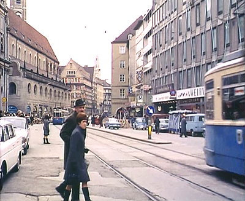
Plus Wembley stadium for the football clips.
RANDALL
AND HOPKIRK [DECEASED]: A Disturbing Case
Elgin Avenue, W9
Randall leaves the police station with Marty in the Mini after being
told not to leave town.
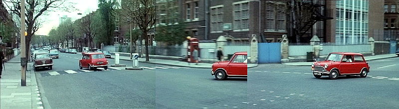
Also news that the Koestler’s mansion from THE PERSUDERS!: Powerswitch may have been identified on the Roger Moore forum. This also appears in THE ZOO GANG: Mindless Murder.
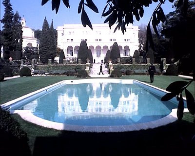
There is quite a lot of work being done to identify location in Riviera on this form so it is worth a visit.
20th September - Geoff Dodd has sent in the following locations from LS56:
RETURN
OF THE SAINT:
The Obono
Affair
Simon goes to see the Bentley Brothers
at
Stapylton Road near the junction with Salisbury Road looking towards Union Street,
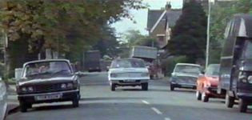
Saint Albans Road at the junction with Wrotham Road,
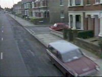
Stapylton Road near the junction with Thornton Road, also looking towards Union Street
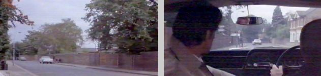
18th September - Alan and Alys Hayes were kind enough to send in recent photographs of the following locations:
Upper Cheyne Row, Glebe Place, SW3 as seen in THE AVENGERS: Hot Snow
Battersea Bridge as seen in THE AVENGERS: Girl on the Trapeze -
Saint Luke's Chelsea from MAN IN A SUITCASE: Sitting Pigeon-
18th September - Jaz Wiseman wrote in with this observation:
THE
AVENGERS: Game (Robert Fuest:
June 1968)
N35:
Aldenham
Park - Steed (Patrick Macnee) and Tara (Linda Thorson) go
to visit Brigadier Wishforth-Browne
(Anthony Newlands) at an army training ground where
troops are exercising. Later they go back to a meeting with the Brigadierin
Steed's yellow Rolls Royce and are nearly run down by the corpse of the
Brigadier
which has been put in an unmanned jeep.
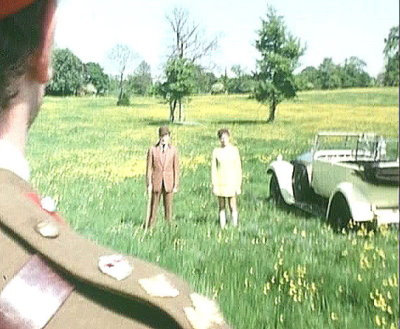
14th September - Sam Denham has found the following at long last:
THE
PROTECTORS: Your Witness(Jeremy
Summers: Summer 1971)
Corner of Sussex Place and Strathearn
Place - Harry takes Christie to Paul’s flat.

9th September - Jaz Wiseman has sent in:
THE
PERSUADERS!:
The
Morning After(Leslie Norman: 1971)
Stockholm Arlanda
Airport, Sweden - Danny sees
Bret and his new wife to the plane as they fly out of Stockholm.


1st September - After looking at a lot of trees we have been able to positively identify the following scenes as having been filmed in the grounds of N35: Aldenham Park:
THE
AVENGERS: Never, Never Say Die
Stone (Christopher Lee) is drawn to the radio of a
young man sleeping by his Triumph roadster. Steed (Patrick
Macnee) drives along in his Land Rover looking for the
mysterious stranger. Doctor Penrose (Jeremy Young) and
a number of men from the Neoterric
Research Unit search the woods for Stone.
THE
AVENGERS: Season
Seven UK title sequence
Steed (Patrick Macnee) battles with empty suits of
armour.
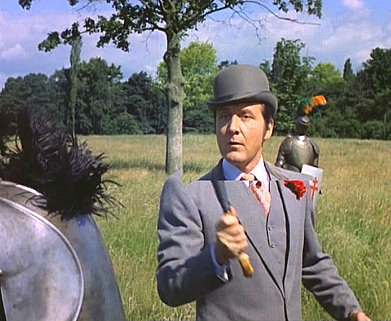
THE
AVENGERS: You Have Just Been
Murdered
Morgan (Les Crawford), leads Mrs Peel (Diana Rigg)
towards a nearby caravan, but as they pass a haystack Skelton (Simon
Oates) jumps out and tackles Mrs Peel. Steed (Partrick
Macnee) and Unwin
(Barrie Ingham)
are not far behind and it is not long before Unwin
is also captured by Skelton. Steed soon discovers Needle's hiding place
and Steed battles with Morgan. Needle attempts to flee in a Landrover
with the ransom money, but the case explodes blasting the Land Rover to
pieces and Needle into a tree.

THE
AVENGERS:
Tara King (Linda Thorson) waits in her AC Cobra for Lord Barnes who is
arriving by Hughes 269B helicopter.
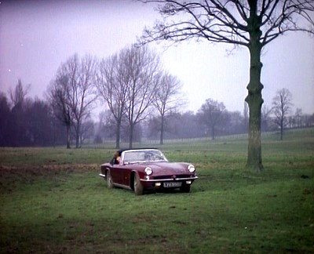
THE
AVENGERS: Super Secret Cypher
Snatch
Mother (Patrick Newell) sets up his mobile HQ in a field in his Bentley
with the help of Rhonda (Rhonda Parker). He briefs Tara (Linda Thorson), sitting
on her AC Frua
and Steed (Patrick Macnee)with
his Yellow Rolls Royce Silver Ghost.

THE
AVENGERS: The Interrogators
Paid informant, Fillington,
is practicing football in a field when Sgt Blackie (Glynn Edwards)
creeps up and shoots him from a distance.
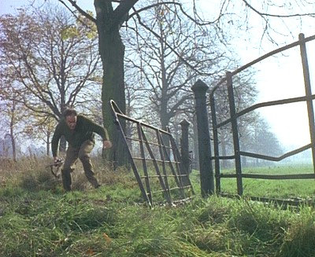
THE
AVENGERS: All Done with
Mirrors (Ray
Austin: May 1968)
Steed (Patrick
Macnee) invites Tara
(Linda Thorson) to share a meal with
him in a field. He cooks a steak using the heat from the engine of his
Yellow Rolls Royce Silver Ghost.
15th August - A couple of new unknown locations from THE AVENGERS: The Interrogators on page LS2.
12th August - Sam Denham has written in to point out two glaring omissions:
THE
PERSUADERS!: To the Death Baby
H7:
Black Park Lake, Black Park, Iver
Heath, Buckinghamshire
Whilst out riding Lord Brett Sinclair (Roger Moore) attempts
to warn Shelley Masterton
(Jennie Linden) about Carl Foster.
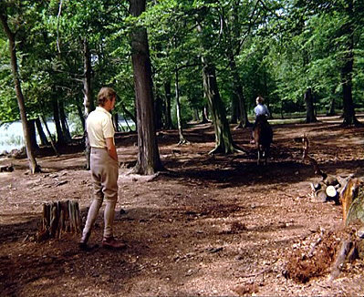
THE
PERSUADERS!:Powerswitch:
H8:
Pinewood Studios, Pinewood Road, Iver
Heath, Buckinghamshire
Lord Brett Sinclair (Roger Moore) and Pekoe Rayne (Annette
Andre) ask a car rental agent (Vicki Woolf) about
car rentals at Pinewood Garage (opposite the studio's double
lodge entrance, now gone unfortunately).
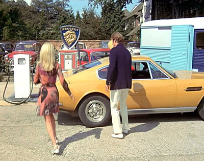 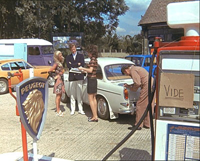
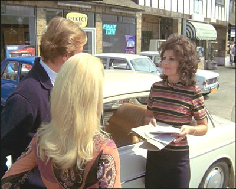
7th August - Alan Leventhall spotted this establishing shot in THE BARON: The Man Outside and has identified it as Stow-on-the-Wold, Gloucestershire. There have been a number of locations spotted recently that we've overlooked, so please keep you eyes open and let us know about any others we may have missed.
THE
BARON: The Man Outside
Stow-on-the-Wold
- Mannering and Cordelia
arrive in the Jensen at Scottish town to attend the inquest into
Douglas McKrae's
death.

16th July - Geoff Dodd spotted the same car parked up in these episodes and was able to kill two birds with one stone and a lot of detective work.
DEPARTMENT
S: The Shift That
Never Was
R13:
Hendon Wood Lane - Stewart Sullivan and Jason King
drive to the Northover
Atomic Power Station in the hope of finding Annabelle.
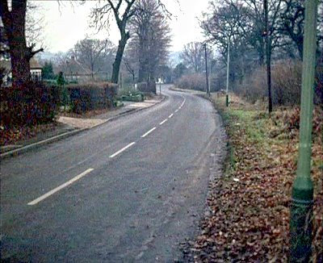
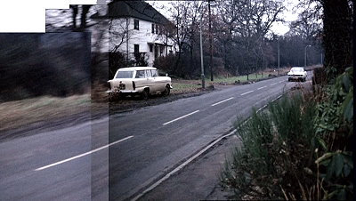
Geoff also set in photos of how it looks now.

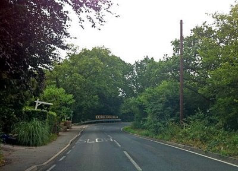
DEPARTMENT
S: Les Fleurs
du Mal
R13:
Hendon Wood Lane - Weber
and his men go in search of Johnny’s secret with Stuart Sullivan in
tow. They find themselves close to Per le Chaise cemetery. The police
are not far behind with Jason and Annabelle (footage filmed
at same time as above).
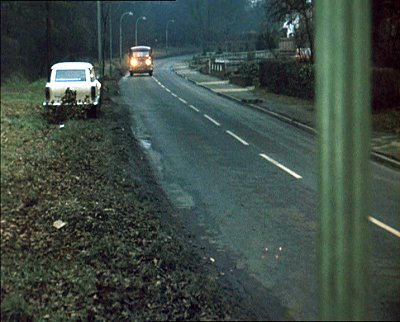
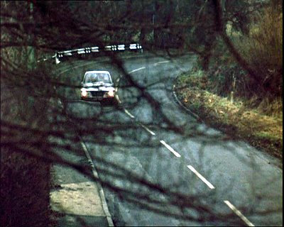
15th July - More locations from MAN IN A SUITCASE: Web with Four Spiders
Heathrow Airport - Dr James Norbert (Ray McAnally) arrives at London Airport from Manchester and is met by various officials and his daughter Martha (Jacqueline Ellis).
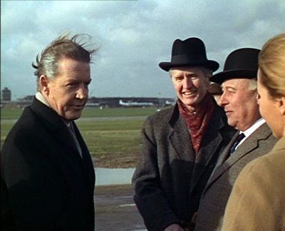
The Ritz Hotel, Piccadilly, W1 - McGill (Richard Bradford) arranges a meeting with Martha Norbert (Jacqueline Ellis) in the lobby of the Ritz. Somehow the CIA man Johnson (Warren Stanhope) is there also, but McGill manages to avoid a confrontation.
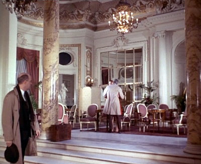
Whitfield Street on to Tottenham Street on to Charlotte Street, W1 - On his way to Lancaster House in a taxi, McGill arranges with a taxi driver to drop him off surreptitiously so he can confront Simon Croft.
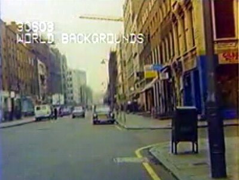
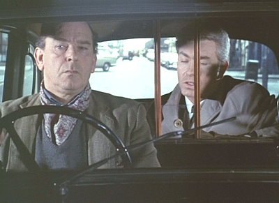
Tottenham Court Road, W1 - Dr James Norbert is driven from London Airport into town, but the events of the previous night weigh heavy on his conscience.
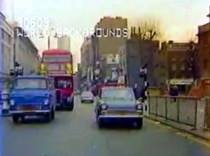
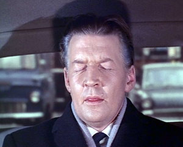
6th July - Paul Stroud has been at the carrots again and has spotted two locations from MAN IN A SUITCASE: Web with Four Spiders.
Oldfield Lane, Greenford, Middlesex - Croft leaves McGill in the limousine with his chauffeur, Frederick
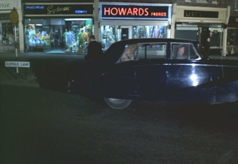
Ruislip Road, Greenford, Middlesex - With Croft's chauffeur, Frederick, in the back of the limousine, McGill leaves his hotel and drives off for London followed by intelligence agents.
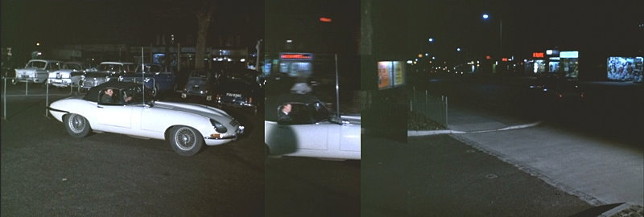
29th June - Another Swedish location identified by Paul Stroud.
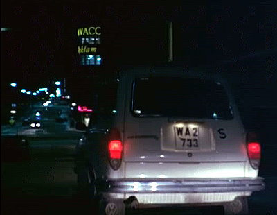
THE
PERSUADERS!:The Morning After
Kungstensgatan,
Stockholm, Sweden - After escaping from the
Marriage Bureau Danny jumps into Bibi
Bergman's car. She offers to drive him to Gunar
Christianson's office at the health club.
23rd June - Paul Stroud
RANDALL AND HOPKIRK [DECEASED]: The Ghost Who Saved the Bank at Monte Carlo
Monte Carlo harbour, Monaco
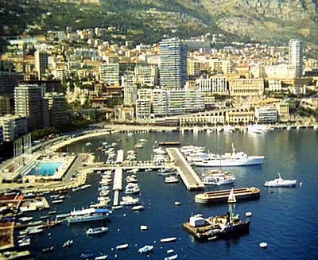 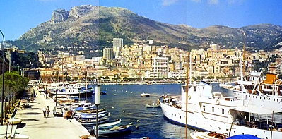
Rue de l'Echelle, Paris, France
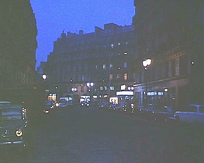
The Casino, Casino Square, Monte Carlo
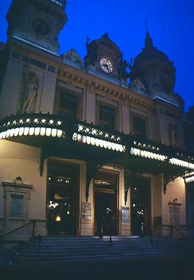
Hotel de Paris, Place du Casino, Monte-Carlo
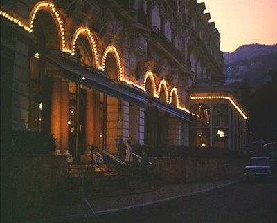
Hotel Nixe Palace, Avenida Joan Miró, Palma de Mallorca

Juan-les-Pins, Alpes-Maritimes, France
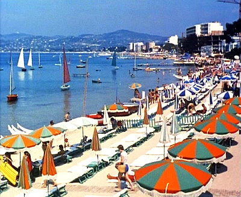
18th June - Julie Cartwright spotted Montpellier Place, SW7 in THE NEW AVENGERS: Sleeper and after checking the site noticed it was not listed in the index or in Action City. After a thorough search she found it in one of our obsolete pages. Thanks to Julie the listing had been indexed and inserted into the guide with a credit to its original finder, Sam Denham. Without her spotting this location for a second time, it could well have been overlooked.
THE
NEW AVENGERS: Sleeper
Montpellier
Place, SW7 - Steed and Gambit halt at a no entry
sign at a road junction (junction of Montpellier Walk and
Montpellier Place) in the Jaguar. They see a policeman
sleeping beneath the sign and continue on their way (along
Montpellier Place).
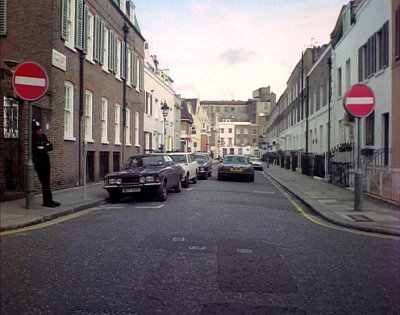
17th June - Paul Stroud
DEPARTMENT
S: The Mysterious Man
in the Flying Machine
Rue Dejean,
Paris - Jason
and Stewart got to the Bar Rapp, Rue St. Dominique as requested.


DEPARTMENT
S: The Mysterious Man
in the Flying Machine
St. Tropez harbour - The Department team set up headquarters in a
harbour hotel.

DEPARTMENT
S: The Mysterious Man
in the Flying Machine
St. Paul de Vence - Gerrard
drives up to the villa of Lucky Le Beau.
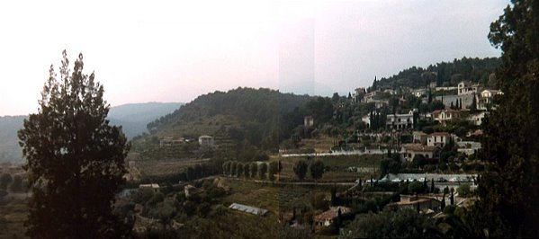
20th May - Paul Stroud
RANDALL
AND HOPKIRK [DECEASED]: Could You Recognise the Man Again?
Frith
Street, W1 - Establishing shots for Ben Craddock’s
amusement arcade, where Jennings arrives to collect £50 arrears
protection money.
RANDALL
AND HOPKIRK [DECEASED]: Could You Recognise the Man Again?
Greek
Street, W1 - Establishing shots for Ben Craddock’s
amusement arcade, where Jennings arrives to collect £50 arrears
protection money.
RANDALL
AND HOPKIRK [DECEASED]: Could You Recognise the Man Again?
Great
Windmill Street, W1 - Jeff Randall is spending the
night visiting various clubs looking the Rodens
RANDALL
AND HOPKIRK [DECEASED]: Could You Recognise the Man Again?
Culverhay,
WC2 - Early morning Covent Garden,
and Jeff is still searching for the Rodens.
RANDALL
AND HOPKIRK [DECEASED]: Could You Recognise the Man Again?
Macclesfield
Street, W1 - Jeff Randall is spending the night
visiting various clubs looking the Rodens
(looking towards Dean Street then panning to the Red Mill Club, 12
Macclesfield Street).
RANDALL
AND HOPKIRK [DECEASED]:
Never
Trust a Ghost
Chalcot
Crescent, NW1 - Jeff drives Sandra home, shot is
reversed (an identical shot to When the Spirit
Moves You, but reversed).
RANDALL
AND HOPKIRK [DECEASED]:
Never
Trust a Ghost
Greenberry
Street, NW8 - Jeannie drives to Jeff’s in the red
Mini in order to provide an alibi.
RANDALL
AND HOPKIRK [DECEASED]: A Sentimental
Journey
Glasgow
- Randall leaves Glasgow with Dandy Garrison on the London Express from
Glasgow Central Station (establishing shot Glasgow Central
Station, Gordon Street).
19th May - Matthew Hart
THE
AVENGERS:
M25
- Pegmire Lane, near the
junction of Summerhouse Lane, Patchetts
Green - After
collecting Lord Barnes, who has arrived by helicopter, Tara King drives
him home in her AC Cobra.
18th May: Geoff Dodd
JOURNEY
TO THE UNKNOWN: The Madison Equation
Walton Court, Station Avenue, Walton-on-Thames – The main entrance to the office block where
the National Computer Centre is housed and the Madisons
work on the Computex
GB computer.
16th May 2010 - Mike Richardson has been researching season two of THE AVENGERS for the past fortnight and has sent in this summary of his findings:
THE
AVENGERS: Death of a Great
Dane
Cannon
Street, EC4 - Steed and Cathy look out across the
city from Litoff's
bedroom window where they are trapped.
THE
AVENGERS: Death of a Great
Dane
Strand,
WC2 - Establishing shot of the city seen prior to
Steed making his first visit to Litoff's
office suite (view of the Thames looking from Shell Mex
House)
THE
AVENGERS: The White Dwarf
The
University of London Observatory, Mill Hill, NW7 -
Professor Richter is working late into the night at Tor Point
Observatory, Cornwall.
Identified with the help of Alan Field:
THE
AVENGERS: The Sell Out
Bedford
Way, WC1 - The chauffeur driven Rolls Royce
containing Steed moves away from the kerb (Bedford Way) and then takes
the first road on the left (Tavistock
Square), only to be followed by a potential assassin driving a Sunbeam
Alpine convertible.
THE
AVENGERS: The Sell Out
Tottenham
Court Road, W1 - The Rolls Royce that Steed is a
passenger in is followed down the busy high street (Tottenham Court
Road) by a Sunbeam Alpine convertible. Both vehicles then turn left
into a side street (Maple Street).
THE
AVENGERS: The Sell Out
Richmond
Hill Hotel, Richmond Hill, Richmond-upon-Thames, Surrey
- The chauffeur driven Rolls Royce containing Steed turns off the road (Richmond
Hill) and goes into the hotel car park followed by a Sunbeam
Alpine convertible. The Rolls is then driven around the side of the
building and stops behind the hotel.
THE
AVENGERS: Traitor in Zebra
Weston
Green, Esher, Surrey
- Rankin (John Sharp) walks his dog to the local
shop, where the animal enters the premises alone. Meanwhile, Rankin
moves off to stand beside a tree on the grassland opposite the shop.
Having walked across the grassland, Graham (William Gaunt)
arrives and he enters the shop. The following evening an anxious Mellors
(Ian Shand)
arrives at the Glendower Arms Hotel (The Greyhound)
in his Morris 1000 Traveller at night for a meeting with Rankin. Later,
Mellors
leaves and getting back into his car, he is attacked from behind by an
assailant who garrottes him. Later, Franks (Richard Leech)
arrives and he also enters the shop.
Identified with the help of Tavistock of the Britmovie forum
THE
AVENGERS: The Sell Out
Endsleigh
Street, WC1 - Steed (Patrick Macnee)
parks his AC Greyhound sports car and after placing some money in a
parking metre, he walks up the street. Meanwhile, having parked his
Ford Consul some distance away and on the other side of the road,
Fraser (Michael Mellinger)
proceeds to follow Steed on foot.
THE
AVENGERS: The Sell Out (Don Leaver: June 1962)
Tavistock
Square, WC1 - Steed enters the Tavistock
Hotel, where he has hidden his charge Roland. Later, Steed (Patrick
Macnee) leaves the hotel impersonating Roland and gets into a chauffeur
driven Rolls Royce.
THE
AVENGERS: Six Hands Across
a Table
Albert
Embankment, SE1 - Establishing shot of Hampton
House, as the offices of the Reniston
Group shipbuilders.
1st May - Alan Field
THE
AVENGERS: Legacy of Death (Don Chaffey: July 1968)
Berkley Road, NW1 - Tara and Steed leave London in Tara's Lotus on
their way to visit one of Steed's childhood haunts (Berkley
Road on to Sharpleshall
Street).
28th April - Sam Denham
U.F.O.:Flight Path
Alberton Drive, Ringshall- Paul Roper (George Cole) arrives home in his
bronze S.H.A.D.O. car to find Carol (Sonia Fox), his Wife, has been
visited by a dangerous intruder. Some nights later the Ropers arrive
home after a night out. As Paul puts his car away he takes the
opportunity to pass on the information requested of him.
U.F.O.: The Responsibility
Seat
Alberton Drive, Ringshall- Straker
arrives home late at night with Jo Fraser.

Mike Richardson
THE
AVENGERS: Traitor in Zebra (Richmond
Harding: November 1962)
Broom Road, Teddington - John Steed (Patrick Macnee),
dressed
as an navy Commanderarrives in his Lagonda
at the research laboratory to see Doctor Gale, he is allowed through
the gates of the establishment (Teddington
Studios gates).
THE
AVENGERS: The White Dwarf (Richmond
Harding: February 1963)
Parliament
Square, SW1 - Establishing shot of the
Ministry of Science Division Of Astronomy (H.M. Treasury
building).
27th April - Mike Richardson
THE
AVENGERS: Warlock
Cromwell
Road, SW7: John Steed (Patrick Macnee)
walks along Cromwell Road to pay a visit to the Natural History Museum
to find Cathy Gale.
26th April - Mike Richardson
THE
AVENGERS: Warlock
Covent
Garden, WC2: John
Steed (Patrick Macnee) walks through the fruit and
vegetable market for a meeting with One-Ten (we see a street
sign indicating the junction of Covent Garden and Russell Street).
THE
AVENGERS: Warlock
Floral
Street, WC2:
John Steed (Patrick Macnee) walks towards the pub
where he will meet One-Ten (The White Lion, 24 James Street).
25th April -
THE
AVENGERS: Murdersville
N21:
Mrs Peel drives Paul Croft to his new home in Little
Storping-in-the-Swuff
in her Lotus. On the way they pass Samuel Morgan (John Chandos)
driving a Limousine towards the village (Silver
Hill, near Shenley).
THE
AVENGERS: Murdersville
N26:
Mrs Peel drives Paul croft to his new home in Little
Storping-in-the-Swuff
in her Lotus (driving out of Shenley along Harris Lane).
LS4 is now a page devoted to identifying back projection plates
22nd April - http://avengerland.theavengers.tv/www.hammerhouseofhorrortvseries.co.uk
HAMMER
HOUSE OF HORROR:
Rude
Awakening
Scotsgrove House, Scotsgrove
Hill, Thame,
Oxfordshire
- Lower Moat
Manor


21st April -
THE
AVENGERS: Something Nasty in
the Nursery
N4:
Gordon (Trevor Bannister) plants a baby bouncer in
the car of Sir George Collins (Patrick Newell) parked
in the car park at the rear of his apartment (Studio
70 Cinema). Once the ball is planted he return to
his blue Mini van and a figure dressed as a nanny gets out of the rear.
Mrs Peel (Diana Rigg) arrives
looking for Sir George when Gordon (Trevor Bannister)
intervenes by trying to run Mrs Peel down in the Van. She escapes into
the back door of the apartment block watches as the nanny leaps into
the van as it drives off. She finds Sir George in his car behaving very
strangely.
This was thought to be a studio car park, but has been found to be the car park of the cinema that used to stand directly opposite the studio seen in the photos below.

14th April -
Thanks toTHE PLAGUE OF THE ZOMBIES (1966), filmed at Frensham Ponds, we have been able to identify the following locations:
DANGERMAN: Such Men Are
Dangerous
Drake steals a Land Rover and is pursued by his former comrades.
THE
BARON: Red Horse, Red Rider
The Baron travels to Khakania
and drives to the house of Olmira
with his granddaughter, Savannah. They are followed all the way by Salar
and Shamir in a Jeep. Later, Dressed
as farmers The Baron and Savannah drive across Khakania
to the border, with the statuette, followed by Salar
and Shamir in the Jeep (Frensham
Common).
13th April - LS86 updated.
12th April- Geoff Dodd
THE
BARON: The Edge of Fear
St Charles' Hospital, Exmoor Street, W10 - Cerdan
(John Abineri)
walks out of his hospital ward (Saint Charles' Hospital) and
steals the car of a young man who is busy talking to a two nurses. The
man notices too late and Cerdan
drives out of the hospital gates.
(Identified by Geoff Dodd, April 2010)
11th April -
THE
PRISONER: Do Not Forsake Me
Oh My Darling
Boulevarde de la Corne
d'Or (D6007), Villefranche-sur-Mer,
France - After
arriving in Europe Number 6 drives along a twisting Corniche
(Starting west of Avenue RaquellMeller
and ending at the Corniche
Andre de Joly).and
enters a small town, in his Lotus, on his way to Seltzman
(World backgrounds clip 309028).
10th April - LS33 and LS41 updated. Associated British Studios Screen Grabs page updated.
5th April - LS30 and LS40 updated.
3rd April - LS26 updated and some identified locations moved to LS00.
1st April - Geoff Dodd
THE
AVENGERS: From Venus with Love
N19: High Canons, Buckettsland
Lane, Well End -
Mrs Peel is at Venus Browne's house when it is attacked by a light ray.
Mrs Peel can only watch as the mysterious light winds its way down the
road.

THE
AVENGERS: The Curious Case of
the Countless Clues
G28: The Ridgeway, Northaw - The Citroen with Earle and Gardiner on board
leaves Flanders' house carry a number of expensive paintings with them (towards
the Well Road junction). Later Steed driving the breakdown
truck back to London weaves across the road (in the opposite
direction).
Thanks also go to Geoff for providing photos.
31st March - Alan Field
THE
NEW AVENGERS: The Midas Touch
Beckton Gas Works
(demolished) -
Former British agent Freddy (John Carson) is
sleeping off a heavy night in an abandoned building when he is awoken
by the arrival of two Land Rovers carrying Professor Taylor (David
Swift) and his men. The men search the building and find a
guinea pig which bites Tayman
(Lionel Guyett).
Professor Taylor is forced to shoot Tayman.
Freddy watches as Taylor and his men drive away with their prize.
THE
SAINT: The Contract
Wymondley Road to the
south” of the Goods Yard, Hitchin Station (now part of Wedgewood Road
redevelopment) -
Farnberg
drives from London to the spot where he has hidden Mrs Ballinger. Simon
and Dunstan are following close behind.

Alan also sent in a number of recent photos of N21: London Road.
RETURN
OF THE SAINT:
The Armageddon Alternative
Cavaye Place, SW10 – Simon Templar (Ian Ogilvy)
arrives in his Jaguar to ask his garage attendant, Fred, if he has
noticed anything suspicious. Later Simon and Lynne Jackson (Anouska
Hempel)
arrive in a Volvo at the entrance of Simon’s garage. They
wait for Fred (George Cole) to leave in his Morris
and they follow.
GIDEON’S
WAY: The Nightlifers
Kings Road, SW3 crossing the junction with Old
Church Street, heading west
- Sloan decides to beat up Elspeth McCrae to teach her a lesson. Sloan’s
gang drive in the Bentley to find a phone box near her flat.
They are followed by plane clothes policemen.

GIDEON’S
WAY: The Great Plane
Robbery
Sevington Street, W9 – The police are watching Kautsky’s
house so he sends his son, Sid to collect the pay-off money.

GIDEON’S
WAY: The Great Plane
Robbery
Connaught Street, W2 – Bailey is watched as he makes a call from a
phone box.
GIDEON’S
WAY: The Great Plane
Robbery
N53:
Butterfly Lane, Elstree - The decoy van driven by Kautsky
is pulled over by two police officers in a patrol car.
GIDEON’S
WAY: The State Visit
Francis Street, SW1– Police cars patrol the street looking for
Fischer as well as dropping of descriptions to constables on the beat.
28th March - Sam Denham has written in with a location he is surprised that he had not recognised before,. From RETURN OF THE SAINT: One Black September, and now one of London's top attractions.
Chalk Farm Road, NW1: Garton (Aubrey Morris) is working in his stables workshop (former Midland Railway stables, now Stables Market) with his gorilla (Ron Tarr) when he gets a call from Simon Templar to tell him that he is about to pay a visit. Simon Templar (Ian Ogilvy), in his Jaguar XJS with Captain Leila Sabin (Prunella Gee) aboard (drive past the Camden Roundhouse and) arrive at the stables where they question Garton about the passport he is forging.
25th March - Paul Stroud has identified two locations in one building. In THE PERSUADERS!: Five Miles To Midnight Count Sangallo's mansion is both:
N19: High Canons, Buckettsland Lane


And
D1:


23rd March - Geoff Dodd
RANDALL
AND HOPKIRK [DECEASED]:
My
Late Lamented Friend and Partner
Queens Gate Terrace into Gore Street SW7 - After leaving Jean’s flat Jeff and Marty
drive in Jeff’s Vauxhall towards the hotel where the beatnik is staying.

19th March - Geoff Dodd
THE
AVENGERS: The Curious Case of
the Countless Clues
O1- Deeve's
Hall Lane, Ridge
- Flanders' (Edward de Souza) Rolls Royce breaks down in a quiet
country lane. Fortunately Stanley (Tony Selby) arrives in his breakdown
truck to offer assistance.
THE
PROTECTORS: The Bodyguards (Don Chaffey: 1972)
O1 - Deeves
Hall Lane -
Chino drives Harry and the Contessa
to the late Ralph Corder's
house.

16th March - Geoff Dodd
THE
SAINT: The Scorpion
Totteridge Common at the junction with Chestnut
Lane – Eddie
arrives on his bike at the home of “The Scorpion” (The Scorpion's house
had been demolished).
16th March - Paul Stroud
DANGER
MAN: Under the Lake
Grande Place, Brussels- John Drake is in Zurich with Colonel Keller
on the trail of Nazi gold.
(Identified by Paul Stroud, March 2010)
14th March - Ian Rogers
GIDEON'S
WAY: The Housekeeper (Leslie Norman: 1965)
Barnet Way - Leaving Apex Corner towards Borehamwood – It the back of a police car Detective
Superintendent Warr
is told to investigate the late Mr. Henderson’s accounts by Commander
George Gideon.
GIDEON'S
WAY: The Housekeeper (Leslie Norman: 1965)
White City Stadium -
Ralph Maricut
is picked up at the dog track by the police.

12th March - Geoff Dodd
THE
SAINT: The Scorpion
Kilburn High Road – Eddie Black makes his way to Patsy Butler’s
flat (motorcycle turning is Kilburn High Road into Quex
Road).
11th March - Paul Stroud
THE
PERSUADERS!:TheOzerov Inheritance
The Hotel de la Paix,
Quai du Mont Blanc, Geneva
- Brett and Danny's hotel. Later Danny drives past the hotel on his way
to the bank.
THE
PERSUADERS!:TheOzerov
Inheritance
Place du Bourg de Four, Geneva - Danny and Brett leave the Police Station
after being interviewed about the death of Monsieur Ganguin.
THE
PERSUADERS!:TheOzerov
Inheritance
Place Philibert
Berthelier,
Geneva - Danny
Parks his car in front of the Caisse
d'Epargne
on the Place Philibert
Berthelier,
Rue des Moulins
on his way to the Yelker
Trust Bank.
THE
PERSUADERS!:The
Ozerov
Inheritance
Place des Bergues,
Geneva - Danny
drives to Walther and Dante's office.
8th March - Simon Coward
THE
SAINT: Marcia
Q30: Nutt Grove, off Edgware Way- Simon Templer
arrives in his Volvo at the Reeland
Nursing Home to interview Frank Landon.

6th March - Alan Field
GIDEONS
WAY: Gang War
Grafton Road, NW5 - Weasel tells his tale to Browning and Keen
after they pick him up in their police car. (Beginning near the
corner of Ryland Road, passing the shops at the junction with Athlone
Street, passing under the railway, and ending outside The Carlton pub
on the corner of Warden Road.)


DEPARTMENT
S: Six Days
Lennox Gardens, SW3
–Annabelle and Jason wait outside Howard Walsham’s
flat (No.38) in Jason’s Bentley. Annabelle goes to
search flat after Walsham
leaves with Durrres.
Whist Jason in wooing Janet Walsham,
Howard Walsham
arrives and sees Annabelle watching the flat (opposite No 38).
After Annabelle leaves, Jason tries his own method of obtaining
information. Unfortunately, Howard arrives and interrupts his
interrogation.
DEPARTMENT
S: Six Days
Ovington
Square, SW3 –
After seeing Annabelle watching his flat, Howard Walsham
drives around the block and enters by a back way. Later Annabelle and
Jason stake out Sir Charles Hallet’s
(Tony Steadman) flat in Jason’s red jaguar. They watch as he gets into
a taxi and follow in Jason’s Bentley.
THE
NEW AVENGERS: Sleeper
Beckton Gas Works, E6 - The tour bus arrives at a deserted dock by
the Thames. Tina (Sara Kestelman)
tells the passengers to hide their weapons and make theselves
comfortable. Bart (Prentis
Hancock) checks checks
his weapon. Frank Hardy (Joe Dunne) tries to
escape to warn Steed but is shot by Tina. In the morning Brady (Keith
Buckley) arrives with the S-95 gas and hands it over to the
helicopter pilot (Peter Godfrey). He makes a final
inspection of the gang before they set off. Gang memebers
include Fred (Gavin Campbell), Ben (Dave
Schofield) and Bill (Leo Dolan).

THE
NEW AVENGERS: Sleeper
Aldensley Road, W6 - Directly after the establishing shot of
Kensington Olympia station, Steed’s car is seen making a left turn.
This is Aldensley
Road W6 turning into Brackenbury
Road.The
shops on the right in Brackenbury
Road appear in two episodes of The Sweeney and at least one of Minder.
THE
SAINT: The High Fence
Old Bond Street, W1 - The Saint drives through London at night in
his Volvo on his way to Gabriel Forest’s home (Old Bond
Street W1 passing Stafford Street).
THE
SAINT: The High Fence
Holborn Viaduct, EC1 - Simon Templar drives Gabriel Forest to the Kosey
Korner
Café in his Volvo.

STRANGE
REPORT: Report No.4407-HEART:'No choice for the
donor'
Carlton Vale, NW6– A police officer keeps Adam Strange and
Inspector Collins informed about the car carrying Gynt
(by The Carlton Tavern).

THE
SAINT: The Elusive Ellshaw
Bow Brickhill
Station, Buckinghamshire
Kenneth Ripwell
leaves his father's house for London in his sports car he is followed
by Simon in his Volvo. Simon manages to loose him at a railway crossing.
THE
SAINT: The Elusive Ellshaw
N21: London Road (and Silver Hill), near. Shenley - Kenneth Ripwell
leaves his father's house for London in his sports car he is followed
by Simon in his Volvo.

28th February - Ian Rogers
GIDEON’S
WAY: The Reluctant
Witness
Upper Brook Street/North Audley
Street/Grosvenor Square, W1–
Crooks Syd
Carter and Larry Larkin roam the streets looking for cars They
drive on to a quiet residential street.
27th February - The Artful Teacake (on the Britmovie Forum)
GIDEON’S
WAY: To Catch A Tiger
Bushey High Street/Park
Road, Bushey- Nurse Smith is rushed to hospital in an
ambulance after being knocked down.

19th February - Geoff Dodd sent in Woodchurch Road photos.
16th February - Alan Field
THE
AVENGERS: The Correct Way to Kill
Woodchurch Road NW6: Mrs Peel arrives
the offices of H. Merryweather,
Chiropodist.

18th February - Paul Stroud
THE
PROTECTORS: Dragon Chase
The Plain, Oxford- Lockier
drives into Oxford with Paul and the Contessa
in pursuit.
THE
PROTECTORS: Dragon Chase
Pembroke Square, Oxford - Lockier
(Donald Houston) parks his car (in
Pembroke Square) then enters Pembroke College to confront
his son. He has been followed all the way by Paul Buchet
(Tony Anholt).
Later Paul and the Contessa
watch Devlin and his students leave the college and Devlin drives off
in a van.
THE
PROTECTORS: Quin
Calle del
Conde
de Miranda -
The Contessa
(Nyree
Dawn Porter) waits (in the Mercado de San Miguel)
for Harry to emerge. When he does she hails a taxi (from
the steps of the Mercado) as Harry is driven away but loses
him as his car circumnavigates the Plaza de San Miguel and disappears
along the Calle
del Conde
de Miranda.

THE
PROTECTORS: Quin
Calle Cava de San
Miguel - Harry
Rule (Robert Vaughn) is lead down some steps from
the Plaza Mayor (Calle
de los Cuchilleros)
then along a road (Calle
Cava de San Miguel) and through a door his is followed by The
Contessa
(Nyree
Dawn Porter).

THE
PROTECTORS: Quin
Calle de la Ribera Curtidores- The Contessa
(Nyree
Dawn Porter) visits the The Rastro
Market looking for her contact. Later Paul Buchet
(Tony Anholt)
looks for the same man.

RANDALL
AND HOPKIRK (DECEASED):
You Can Always Find A Fall Guy
Oxford Street- 2nd rain shot looking towards Duke Street
from Lumley Street.
PERSUADERS!:
Read and Destroy
Great George Street, SW1-
Cavendish (Nigel Green) leaves his office building, observed by Heidi
(Kate O'Mara) and Ingrid (Magda Konopka)
who are waiting at a bus stop.
PERSUADERS!: Read and Destroy
Horse Guards Road, SW1-
Cavendish (Nigel Green) is confronted by Heidi (Kate O'Mara) and Ingrid
(Magda
Konopka)
in the back of a black cab.
Additional detail of the three photos of the Sacré Coeur on the FRANCE page.
14th February - Ian Rogers
GIDEON’S
WAY: The Reluctant
Witness
Hendon Magistrates Court, The Hyde, NW9 – Gideon (John Gregson)
watches as Syd
Carter (David Gregory) is put into a prison van, after his hearing, and
is driven away.
13th February
Information sent in by 'Greg', but waiting for photos before details are published.
13th February - Geoff Dodd
THE
SAINT: The Set-Up
Craven Hill Gardens, W2 - Taxi Stops on a side street and Corrigan
gets out. Simon is not far behind.
6th February -Some more firsthand knowledge has come to light as Ian Rogers, has been in touch to let us know the location of Tiny Bray's house in the GIDEON’S WAY episode The Reluctant Witness.
Ian writes: "I can tell you exactly where this was filmed as I was living there at the time. The location is Fuller Street, Hendon NW4 that was, but was pulled down in about 1966. The current Fuller Street is not quite on the same alignment as the original. The War Memorial which can be seen on the wall over Gretchen Franklins' left shoulder was re-erected at the new Fuller Street however.
"Our house was used for wardrobe and make up and is the one which Frederick Peisley enters and Gretchen Franklin exits and they both gave me their autographs."

5th January - Thanks to Jaz Wiseman who has taken the time to send in two locations he has spotted in THE AVENGERS. From The Murder Market, New Southgate Cemetery, N11 and from The Master Minds, an establishing shot of The Place of Westminster, SW1.
31st January - Thanks to Mike Richardson
for sending in his spot of The British Museum, Great
24th January - A bit of local knowledge has enabled Andy Lawrence to identify this sequence from THE AVENGERS: From Venus With Love. This was filmed in the grounds of Rabley Park, J3. The Lotus drives along the road in the opposite direction seen in The Joker.
20th January - Geoff Dodd - a number of new photographs.
THE
CHAMPIONS
episode To Catch a Rat:
Lowndes
Place, SW1 is the location for the Embassy that Craig Sterling is taken
to by Walter Pelham and Sandra Hurst. It's also seen earlier when the
coal man makes his delivery while Richard and Sharon listen in on the
phone. The location of the garage where
Richard and Sharon race to Craig's rescue is 6 Belgrave
Mews West, SW1.
16th January - Geoff Dodd has finally found the location of this short sequence from THE AVENGERS: Stay Tuned. This was filmed at North Avenue at the junction with Queens Way as viewed from Black Lion Hill, Shenley. The gateway marked the entrance to Shenley Hospital, N23. Thanks also to Geoff for the photo.
8th January - Paul Stroud can claim the first location identified in 2010. He has spotted a short sequence in THE CHAMPIONS episode To Catch a Rat. When Sharon leaves the taxi after buying drugs she is finds herself in Motcomb Street, SW1.
2009
12th December (actually received 10th October) - Three locations from Adrian Grepnold who has managed to identify the corner of Duchess Street and Mansfield Street, W1 as seen in THE SAINT: The Smart Detective. The location is virtually unchanged.
And from JOURNEY TO THE UNKNOWN: Girl Of My Dreams – Greg goes in search of the bank in Carrie Clark’s premonition. He crosses the road Shoe Lane, EC3.

And from GIDEON’S WAY: The Firebug, our first E11 location as we see stock footage of a fire engine which features High Road, Leyonstone, E11. Rothschilds was at no 748 just north of Browning Road.
11th December: Two JOURNEY TO THE UNKNOWN locations identified by Alan Field. From Do Me A Favour And Kill Me, the London street down which Jeff Wheeler is walking when a car attempts to run him down. This is Oxford Street, W1. As Alan pointed out, this was a difficult find as left turn into Old Cavendish Street was part of a temporary (four year) one-way system put into place in August 1963 while the ticket hall of Oxford Circus tube station was rebuilt.

Another inspired find is from The Madison Equation is Parliament Hill Fields Athletics Track. Parliament Hill Fields, Highgate Road, NW5 where Jack Hedley goes to interview Richard Vernon.

After Geoff Dodd found the dual carriageway from GIDEON’S WAY:The Tin God Alan also send in the location of the back projection form the preceding sequence. "This is the A1 northbound from Apex Corner / Northway Circus NW7 passing Mount View, The Fairway and Mill Hill Golf Course before looping back to the start. Three times they drive away from Apex Corner between stealing the car and arriving at Pinner."
5th December - many thanks to Andrew Chilcott who has sent in these locations: From DEPARTMENT S: The Bones of Byrom Blain, Gare de l'est in Paris (and not the Gare du Nord as purported). "In particular, the train indicated as leaving platform 11 is for Meaux, which has always been served by the Est station in Paris."

From DEPARTMENT S: A Cellar Full of Silence Netherwood Street, NW6 in the London Borough of Camden. "Today's Netherwood St. is unrecognisable from the 1968 view, as it has been entirely redeveloped". I should also note that Andrew pipped Adrian Grepnold to the post as Adrian sent in the same observation a few days later.

Andrew also suggested that we look closer into the runways seen in the DEPARTMENT S episodes A Ticket to Nowhere and DEPARTMENT S: Who Plays the Dummy? being Hendon Aerodrome. After a little research we have to concur.

4th December - A busy day for international location spotters!
Piers Johnson - has spotted an Australian location in DANGER MAN: The Man on the Beach.
The footage shows skiffs on Sydney Harbour. Piers adds; "The flag is probably indicating an ex-pat Scotsman, the skiffs running out of the Flying Squadron are famous for having large emblems on the sails to identify them - these days it's mostly corporate logos. The squadron sail out of Careening Cove, which is just East of the Harbour Bridge - their racing course goes out past Taronga Zoo nearly up to Vaucluse,"


Paul Stroud has been pouring over THE PERSUADERS! episode The Moring After for locations in Sweden and has managed to identify these so far: Brett's hotel is The Grand Hotel, Södra Blasieholmshamnen, Stockholm

The bridge on the way to the Marriage Bureau is Djurgårdsbron, Stockholm

The Marriage Bureau is the Stockholm School of Economics, Sveavägen

Another international spot comes from Adriano Candali who has finally identified this footage from DANGER MAN: You’re Not In Any Trouble, Are you? as via Veneto, in Rome.
30th November - THE PERSUADERS! unknowns, French, Italian and Pinewood added to LS37.
29th November - The original Avengerland location spotter, Mike Richardson, has come up trumps with this THE NEW AVENGERS location. From the episode Sleeper we see Townmead Road, London, SW6. The bridge under the railway still exists, although bypassed by the Townmead Road extension but the sidings have been redeveloped together with what is now Chelsea Harbour.

27th November -A cracker of a find from Geoff Dodd who has finally found the road seen in back projection in the DEPARTMENT S episode A Cellar Full of Silence. This is City Road, EC2.

Geoff has also found another elusive piece of back projection, from THE SAINT: A Double in Diamonds. An impressive find as the film was shown reversed in the episode and featured Gloucester Terrace, W2.
24th November - Paul Stroud has kindly sent in another batch of French locations fromTHE PERSUADERS! episodes The Gold Napoleon, To the Death, Baby and Angie...Angie.
19th November, 2009 - Another surprise from out of the blue, David Harris has found the farm from the opening sequence of THE AVENGERS: The £50,000 Breakfast. This is K10, Home Farm part of the North Mymms Park estate. I doubt that it would have been found without David actually going there to check it out. His photograph is conclusive proof.


18th November - Geoff Dodd has come up with the goods again as he has found the road used in this sequence ofGIDEON'S WAY: The Tin God. The locations, which has hardly changed at all, is P11: George V Avenue, Pinner Park, Harrow.

17th November - Paul Stroud has been in touch with more details locations used in THE PERSUADERS!: Five Miles to Midnight. Locations include Rome, Italy locations plus new locations from Nice, France.
9th November - A very impressive spot from Alan Field who has found Mavis' boarding grubby house from the MAN IN A SUITCASE episode The Girl Who Never Was. This is All Saints Road, W11.
8th November - Another coup from Alan Field who has sent in three new RANDALL AND HOPKIRK [DECEASED] locations from the episode Vendetta for A Dead Man:
Store Street, WC1 - After scanning a street with a spotlight for Eric Jansen, the police Landover is called away by a radio message and drives down this street.
Malet Street WC1 - Jeff is driving over to Jeanie's flat in his Vauxhall when he is intercepted my Marty with new that Jean has already left to see Emile (north up Malet Street, passing the end of Keppel Street). Later Jean takes the same route in her Mini to go and see Emile.
Gower Street, WC1 - Jean is driving her Mini to go and see Emile when she is stopped at the traffic lights (Store Street/Keppel Street).
Finally, a correction: Alan was very surprised when I read that the deserted street scenes from the start of Never Trust A Ghost and It’s Supposed To Be Thicker Than Water were filmed in Kingston-on-Thames because they didn’t look like any part of Kingston that he had ever known. That's because they are both Store Street, WC1 first is looking west across Tottenham Court Road towards The Rising Sun pub and the second is looking the other way from the same point.
5th November - Yet again Alan Field has come up trumps with a number of locations from GIDEON'S WAY. Here they are:
Fall High, Fall Hard
Moorgate, EC2, looking west along London Wall


Looking west along Upper Thames Street, EC4 across the junction with Queen Street.

(It’s while waiting at these traffic lights that Gordon Jackson gets shot in The Ipcress File).
The White Rat - Baker Street, NW1

The archway with the glass canopy is just about the only unchanged feature.
Gang War - Bayham Street / Bayham Place, NW1

The Perfect Crime - Sloane Square, SW1
Subway To Revenge - Sandland Street, WC1


The State Visit, Subway To Revenge and The Wall - Victoria Street, SW1.


2nd November 2009 - From Paul Stroud a collection of locations from -THE PERSUADERS!:
The Old, the New and the Deadly - A number of locations in Paris
That's Me Over There - Faraday Building in Queen Victoria Street, EC4
Nuisance Value - Spain
28th October - Another tribute to the hard work put in by Alan Field he has finally managed to find the house of Roger Fulton from the MAN IN A SUITCASE episode Which Way Did He Go, McGill?. The location is Lawn Road Uxbridge and he was very lucky to find it, as Alan says; “Fortunately the part that didn’t get swept away by the rebuilding of the town centre. Although in the episode the car is seen to approach from one road and it’s implied that the house that’s being watched is in another, it’s all in one road. Unfortunately the house that was used for the filming has been demolished.”


14th October - Thanks go to Geoff Dodd for sending a number of location photographs from the W2 area to fill the gaps in the guide. His new photos are of Gloucester Terrace/Craven Road, Bouverie Place, Radnor Place, Sussex Place and Hyde Park Gardens Mews.
Geoff has also finally spotted the mews in THE SAINT: The Man Who Liked Toys that the Saint follows George Fowler to. This is Southwick Mews, W2. Needless to say, Geoff has also provided a photograph of his latest find.
14th October - Remy on the Britmovie forum has managed to find the East German Embassy in Geneva from the DANGER MAN episode A Room in the Basement. The building is on Wadham Gardens, NW3. There is also a nice photo of the house if you follow this link 3 Wadham Gardens NW3 .
12th October - Geoff Dodd has come up trumps again. This time he has found the suburban road taken by Mary Straker’s ambulance in the U.F.O. episode Confetti Check A-O.K. The bizarre thing about this location is that there is nothing special about the location and the ambulance eventually arrives at M.G.M. Borehamwood studios but they went all the way to C24: Bishops Rise, South Hatfield to film it. It’s no wonder this has taken over ten years to find. Well done Geoff!
10th October - A major correction from Ryan McGuinness. Ryan has been researching the location of the World Travel offices featured in DANGER MAN hour-long series. We had this listed as Saint Paul’s Churchyard, EC4 in a demolished building. Ryan has conclusively proved that the building was located at 20 Cannon Street, EC4 and what is more, it still exists. Even spookier, it is the offices of a travel agency!
5th October - Thanks to the SainT and Mark O on the Britmovie Forum for finding Penny’s flat from the DANGER MAN episode The Mirror's New. Thanks also to Geoff Dodd for sending in a photograph of said flats which are Q29: Garrick Court, Green Lane, Edgware.
29th September - The location of the seedy club featured in THE SAINT: The Scorpion, found by Geoff Dodd, is Bouverie Place W2.
Peter Astaire has also traced a location from an episode of THE SAINT. Simon’s Volvo enters Cannonbury Square, N1 in the episode The Contract.
27th September - Celia O'Connor has finally managed to find the location of the beach Hamlyn Gynt swims to in the STRANGE REPORT episode Heart 'No choice for the donor'. This is Whitstable, Kent.
24th September - Unknown locations from MAN IN A SUITCASE: Night Flight to Andorra added to LS21.
23rd September - Geoff Dodd has found the library where Andros Matakitas committed his ghastly crime in JOURNEY TO THE UNKNOWN: Matakitas Is Coming. It is Mayfair Library, 25 South Audley Street, W1.
Geoff has also found two Cambridge locations for another JOURNEY TO THE UNKNOWN episode; Jane Brown's Body.
20th September - better photos and unknown locations from THE NEW AVENGERS: The Tale of the Big Why added to LS71.
19th September - Pre 2009 news put onto a separate page, News 2006 - 2008
Found locations being gathered intoLS0.
17th September - Geoff Dodd has identified more roads seen in the RANDALL AND HOPKIRK [DECEASED] episode All Work and No Pay- Two sequences of Jeanie driving her mini to the Foster brothers’ mansion along Barnet Lane, Borehamwood, Q7 and Q28.
9th September - James Webster has written in with the location of the iconic scene where Purdey, on her motorbike pursues, Bert Brendon as he drives past a country pub in theTHE NEW AVENGERS: The Tale of the Big Why.
James Webster writes: “This is The Rainbow Inn in Middle Assendon (E12), Oxfordshire. I was standing behind the camera as they filmed it. My next door neighbour claimed he drank the beer in the diminishing glass. I was only 6 or 7 but had never seen a film crew before. Scenes from BBC PENNIES FROM HEAVEN were also filmed on this same road between Middle Assendon and Stonor (scenes with Bob Hoskins in his car and the tramp). Also nearby Bix Bottom was setting for 'BLOOD ON SATAN'S CLAW'. Both were directed by Piers Haggard. Turville windmill also features heavily in 'THE PUMPKIN EATER' (On telly soon I think) Think I remember it in VOYAGE ROUND MY FATHER as well.”
Geoff Dodd was identified one of the establishing shots of 'St. Bodes' from THE AVENGERS episode A Sense of History as Corpus Christi College, Cambridge.
3rd September - A major find from Geoff Dodd has identified Nan-Clark's Lane, Highwood Hill in both THE AVENGERS: Who's Who??? andMy Wildest Dream as well as Hankins Lane/Stockton Gardens, NW7 in THE AVENGERS: Who's Who???. These have been two very elusive locations that we have been looking for for years. To top it all off, Geoff has also provided photographs.
22nd August - A correction from Steve Cook; Lincoln's Inn Fields, WC1 for THE PROFESSIONALS: No Stone is incorrect. The car bomb triggered by the parking car was in Northampton Square, EC1. City University buildings can be seen in the background and Google Street View confirms the shot.
17th August -Two detailed spots from Victor Hall. The first had already been proposed by Geoff Dodd, but Victor helped confirm the find. Diane Keen climbs over a wall and escapes with her boyfriend in the RETURN OF THE SAINT episode The Debt Collectorsat Q25, Wood Lane heading towards Stanmore from the A5 Edgware Road.
A very obscure location identified by Victor with his local knowledge is from GIDEON'S WAY, Boy With Gun. Chris Kirk (Howard Knight) walks along some railway tracks with his gun. This was filmed on the Midland Main Line running through Napsbury at the sight where the Signal Box once stood, I7.
24th May - Four excellent and varied spots from Alan Field today:
In THE PROTECTORS: The Big Hit Chino follows Howard’s heavies down Cromwell
Road, SW7.
General Platt lives in Lansdowne
Road, W11 in RETURN OF THE SAINT: The Poppy Chain.
Otis visit Glebe
Place, SW3 in RETURN OF THE SAINT: The Arrangement
Lots of action outside the embassy building in Peek
Crescent, SW19 in THE NEW AVENGERS: TheThree Handed Game
20th May - Geoff Dodd has identified Bridge Wharf, SW11 in the RANDALL AND HOPKIRK [DECEASED] episode Just For the Record. The footage is an interesting shot of a London which is fast disappearing.
Paul Stroud is continuing his researches on THE PROTECTORS and has identified a number of the places visited in Edinburgh by the eponymous Shadbolt. These include Fettes College, Melville Street, Grassmarket and the Vennel, He also found Collingham Road, SW5 in THE PROTECTORS: Vocal.
18th May - More from Geoff Dodd who has identified Winnington Road, N2 and Holne Chase, N2 in THE SAINT: The High Fence.
17th May - From THE SAINT: The Scorpion, Geoff Dodd has found Eddie riding his bike along Winnington Road, N2.
Alan Field spotted a location that had been completely overlooked, Sarah Bosanquet’s flat in the U.F.O. episode Destruction. Kendal Street, W2.
16th May - Peter Astaire has found Dean Street, W1 in a tricky little back projection sequence from THE SAINT: Luella.
15th May - Another THE AVENGERS location had been spotted, this time by Geoff Dodd. 178 Sutherland Avenue, W9 is where Tara King is stood up by Minnow in The Interrogators.
14th May - Tony Pendrey
on the Britmovie Forum has identified the Corfu location for MAN IN A
SUITCASE: The
12th May - Slowly, but surely Geoff Dodd is reducing the number of unknown locations one by one:
THE
BARON: There's Someone
Close Behind You - N45,
Saint
Katherine's Dock, E1, Hyde
Park Gardens Mews, W2, Gloucester
Terrace, W2, and Gloucester
Gate, NW1, Q25.
THE
BARON: The Edge of Fear - Camley
Street, NW1
THE
CHAMPIONS: The Invisible Man - Glamis
Road, E1
12th May - Christopher Matheson‘s contribution has enabled us to narrow down the location of THE BARON’s shop in There's Someone Close Behind You - Sussex Place, W2.
11th May - You can help admire Alan Field’s ability to find difficult/impossible locations when he comes up with following:,
GIDEON’S
WAY: The Reluctant
Witness - Charrington
Street NW1
GIDEON’S
WAY: How To Retire
Without Really Working - Belgrave
Gardens, NW8
GIDEON’S
WAY: The Prowler - Cheapside,
EC4
THE
SAINT: Starring the Saint
- Cheapside,
EC4
GIDEON’S
WAY: The Perfect Crime -
Dane Court, 60 The
Bishops Avenue, N2
GIDEON’S
WAY: The Nightlifers - Cheyne
Row, SW3
GIDEON’S
WAY: To Catch A Tiger - Highgate Cemetery, Swain’s
Lane, N6
GIDEON’S
WAY: The Rhyme &
The Reason - N53
THE
PROTECTORS: Zeke’s Blues - Mill
Hill Circus A1/A5100, NW7, Gloucester
Road SW7
GIDEON’S
WAY: The State Visit - N5,
H.G.
WELL’S INVISIBLE MAN:
Man
In Disguise - The
Burroughs, NW4
10th May - Via the Britmovie Forum, Marty has found one of the banks from THE BARON: The Legions of Ammak at 41 Lothbury, EC2
8th May - Jaz Wiseman has been kind enough to send in excellent photos of a number London locations. It is easy to forget with all the images available from Street View, that we still need actual photographs to illustrate the guide.
6th May - Ever on the lookout for overseas locations Paul Stroud has sent in detailed information about the Austrian location filming for THE PROTECTORS: WAM Part 1 and Part 2 and Border Line. He also spotted Mansion House Street, EC4, Hyde Park Corner, W1 and Trafalgar Square, WC2 in WAM part 1.
5th May - We don’t hear from Peter Astaire very often, but he certainly comes up with some quality stuff:
THE
AVENGERS: Hot Snow - Upper
Cheyne
Row, SW3
STRANGE
REPORT: Report 3424
Epidemic - Gloucester
Terrace, W2
THE
CHAMPIONS: The Fanatics - Kendal
Street, W2
4th May - Geoff Dodd has found all the missing locations from the THE CHAMPIONS: Full Circle; Caledonian Road, N1, Wheelwright Street N1, Winnington Road, N2, Charlbert Court, NW8 and Park Lane, W1.
3rd May - Christopher Matheson has put his detective skills to the fore and found Creed Lane, EC4 in THE PROTECTORS episode A Kind of Wild Justice. It is amazing how this part of The City has kept its character.
26th April - Alan Field has once again come up trumps finding the last missing location from THE CHAMPIONS: The Experiment on Maida Vale, W9.
16th April - Thanks to Paul Stroud for another bumper crop of locations:
THE
CHAMPIONS: To Trap a Rat - Belgrave
Square, SW1, Porchester
Gardens, W2, Shaftsbury
Avenue, W1
THE
CHAMPIONS: The Experiment - Heathrow
Airport, Westbourne
Terrace, W2, Westbourne
Terrace Bridge, W2
THE
PROTECTORS: A Pocket Full of
Posies - Harley
Street, W1
THE
PROTECTORS: Wheels - Heathrow
Airport, Sudbury
House, 15 Newgate
Street, EC3, Riverside
Walk, SE1
THE
PROTECTORS: Balance of Terror - Broad
Sanctuary, SW1, Parliament
Square, SW1, Hendon
Way/Cricklewood
Lane NW2
15th April - David Harris has at last found the water tower seen in THE SAINT: Where the Money Is. The episodes directed by Roger Moore always seem to have more location work than others and this is no exception. Amongst the many locations in this episode we have to add Biggleswade as the water tower is at Toppler’s Hill, just south of the town on the A1.
13th April - A correction had to be made for THE AVENGERS episode All Done With Mirrors location that I thought was Beachy Head, has been found and is just east of Peacehaven. Other then some new coastal erosion protection round the base of the cliffs, the site is almost identical to what it was in 1968.
11th April - More from THE PROTECTORS: A Kind of Wild Justice as Geoff Dodd has found the two streets Paul drives along as he tails Kate Linderman’s car through London. The route Paul takes is along Gloucester Road/Hereford Square and in to Harrington Gardens, SW7.
8th April - Paul Stroud has been putting Street View to good use and has come up with three locations for THE PROTECTORS: A Kind of Wild Justice: Saint Paul's Churchyard, Dean's Court and Carter Lane, all EC4.
5th April - Alan Field has been busy on Street View and has found the following locations: From RETURN OF THE SAINT: The Arrangement the church at the end of the episode is Holy Trinity, Brompton Road, SW7. GIDEON’S WAY: The Housekeeper features a meeting in Canons Park, Canons Park. A fairly tricky location to find from GIDEON’S WAY: The Nightlifers, Pembridge Square, W2. A very, very tricky spot from STRANGE REPORT: Epidemic, Saint Stephen’s Gardens, W2 which no longer exists. Finally a very interesting location form THE SAINT: The Elusive Ellshaw, Roland Gardens, SW7.
2nd April - A newcomer to the site, Martin Green, has at last found the ‘Smart Weston’ street corner location from THE SAINT: The Man Who was Lucky. It’s one of the possibilities that was listed, 103 Golders Green Road, NW11, and was found with the aid of Street View. Thanks very much Martin for taking the initiative to find it.
31st March - Sharp eyed Paul Stroud has spotted Fitzjohn's Avenue, NW3 in THE PROTECTORS: Burning Bush. He also spotted Heathrow Airport in the same episode.
29th March - Thanks to Street View, Geoff Dodd has conclusively identified Kensington Road, W9 appearing in DEPARTMENT Perfect Operation, Geoff had this down as a possible location way back in December.
More from Colin Jordan who has identified a tricky DEPARTMENT S location from The Duplicated Man. This is RNAS Culdrose, near Helston, Cornwall. Colin also spotted Offord Road, N7 in GIDEON'S WAY: Gang War.
28th March, 2009 - Colin Jordan wrote in asking if knew which black and white THE SAINT episode featured Brandon Road, N7 as his grandmother remembers it being filmed. We didn’t have one listed, but a quick search of the unknowns revealed that the episode was The Contract. What made things a lot easier was the Street View image he sent in to illustrate the scene.
With the area covered by Street View growing day by day the opportunities for armchair location hunters are also growing also.
14th March - Thanks to Bendigo of the Britmovie Forum who has identified the church seen in THE SAINT: The Persistent Patriots. This is The Church of Our Lady, 54 Lodge Road, St John's Wood, NW8. I must also thank Geoff Dodd who spotted the same church in an early episode of BUDGIE and provided more reference still for us to help track it down.
28th February - The month ends with a bang, or a clap of thunder! The runway from the title sequence of THE PRISONER has at last been positively identified. After a couple of months of research which eliminated Bovingdon and Radlett as contenders I decided to revisit all previous suggestions. In the good old days the only two options suggested were Hethel and Santa Pod Raceway. Hethel had already been researched and found wanting, but I don’t remember why I never researched Santa Pod properly. After less than half a hour’s work Santa Pod looked possible, after one hour it looked very possible. I put my findings to the Britmovie Forum who were able to gather more evidence. The clincher was some 1967/68 drag racing footage on YouTube found by Mike Richardson.
I must apologise to the lone voices crying in the wilderness who put forward Santa Pod as a possible location many years ago and were ignored. It is such a pity that these suggestions were never followed up. The conclusive result seen here was made possible by the contributions of a lot of people who have helped with this search. I can only name a few here: Jeff Morgan, Sam Denham, Mike Richardson, Michael Humphrey, Peter Dunn, Andrew Pixley, Steve Dix, Chevyman, MarmaladeSkies, PaulPlowman plus many others on the Britmovie Forum and Professional Pilots Rumour Network.
23rd February - Thanks to Wee Sonny MacGregor
on the Britmovie
Forum who has identified the offices of “The
Society For Cultural Relations with
20th February - Once more Remy Hunter on the Britmovie Forum has located another location from THE SAINT, Park Road, NW1. This location features in two episodes, using the same footage: The Rough Diamonds and The Smart Detective.
19th February - It is always good to welcome a newcomer to the site especially if they come bearing gifts. Stephan Thien has identified two ‘Portuguese’ locations from DANGER MAN: English Lady Takes Lodgers. This first, Cascais Beach, is actually in Portugal, the second, pretending to be Lisbon Airport is actually Luis Muñoz Marin International Airport, San Juan.
18th February - Another excellent find from Geoff Dodd, the missing location, High Pines, from THE AVENGERS: Return of the Cybernauts. This is Totteridge Park on Totteridge Common from now on to be called R11.
17th February - Geoff Dodd has been hard at work and come up with the following.
From DEPARTMENT S: A Cellar Full Of Silence the gang drive down King Henry's Road, NW3 to the cellar of A R Franklin, at 6 Kings College Mews East, Kings College Road, NW3. As can be seen from the episode the area was being demolished at the time. Jason King goes snooping round Netherwood Street, NW6, also redeveloped. Geoff found the second location of Tronson’s house claiming in the episode to be “Avenue Road, St John’s Wood” at Avenue Road, NW8.
From DEPARTMENT S: Six Days two of the roads Annabelle and Jason in the Bentley drives down as they follow Sir Charles Hallet, Kensington Church Street, W8 and Notting Hill Gate, W11.
15th February - Via the Britmovie Forum Remy Hunter has located two locations from H. G. WELLS' INVISIBLE MAN: Flight Into Darkness. These can be found at Emperor's Gate, W8 and the junction of Launceston Place, W8 and Cornwall Gardens.
13th February - Thanks go to newcomer, Gary Loveday, who has identified two airport locations from H. G. WELLS' INVISIBLE MAN: Flight Into Darkness. These are Elstree Aerodrome, M17 entering the airport and the dramatic car chased takes place at RAF Hendon/Hendon Aerodrome, NW9. The hangars seen at the end of the chase are now the RAF Museum, and are not recognisable.
18th January - Thanks to Stephen Gallagher we now have photograph of Ettington Park. Stephen also pointed out that this location also features in Robert Wise's 1963 film, THE HAUNTING.
Remy Hunter has proved to be a font of knowledge on Hampstead locations having identified four locations in one go: From THE SAINT: The Elusive Ellshaw, Belsize Crescent, NW3. From THE SAINT: The Covetous Headsman, Mansfield Place, NW3. From THE SAINT: The Covetous Headsman, Willow Road, NW3 and from GIDEON’S WAY: How to Retire Without Really Working Belsize Lane, NW3. Remy has also been kind enough to send in photos of some of these locations.
4th January - From DEPARTMENT S: The Perfect Operation,“Gazza” of the Britmovie Forum, has identified the junction of Tothill Street with Victoria Street SW1 (opposite Dean's Yard). Given the prominent location this has proved hard to identify, well done Gazza.
Some very good detective work from Klark Crass on the Britmovie Forum has resulted in his finding 17 Rue de Masonfrom THE SAINT episode The Abductors. Although the street has had a major facelift we can safely say that this is Colville Gardens, W11.
3rd January - ‘37Sunshine’ at the Britmovie Forum has spotted the flat used by Calvin P. Bream in RANDALL AND HOPKIRK [DECEASED]: When the Spirit Moves You and Vabour in DEPARTMENT S: Les Fleurs du Mal. This is Kings Court is at 31 Prince Albert Road, NW8.
1st January - Good work from Peter Astaire who has tracked down the street George Sewell escapes to in RANDALL AND HOPKIRK [DECEASED]: Vendetta for a Dead Man. This is Goodge Place, W1, a long way away from Wormwood Scrubs.